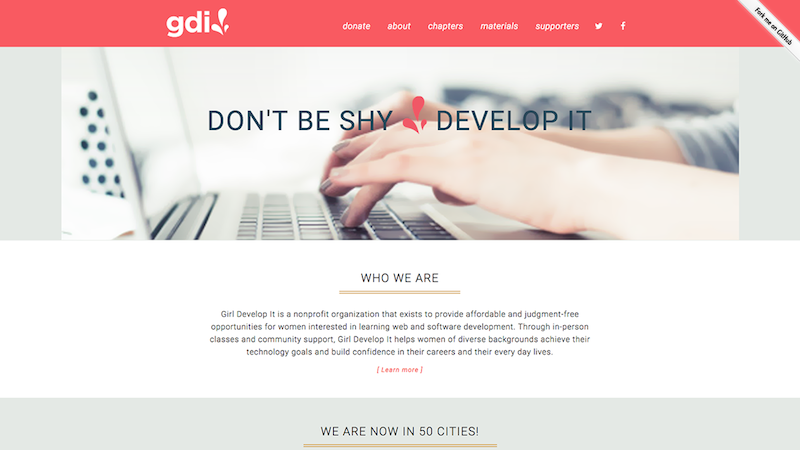

In Girl Develop It's Beginning HTML and CSS class, we'll learn a lot of basic HTML elements and CSS to style them.
It'll be fun!
A simple website may not be flashy, but we're learning the building blocks of web development. Every website out there is built using what we're learning.
Many people think the internet is built only for sharing photos of cats (and sometimes dogs). There's no denying that images make any website more interesting.
The World Wide Web is called a web for a reason. That reason is the hyperlink. You'll make many link elements in the future. If you ever forget how, Google can help.
In class 2, we'll finally be able to add colors, change fonts, and do so much more.
My favorite colors also happen to have names in HTML.
In addition to the 17 original colors, modern CSS has a ton more. I really like darkturquoise.
You can email me at
rae.arnold@gmail.com
or ask questions on our Meetup!